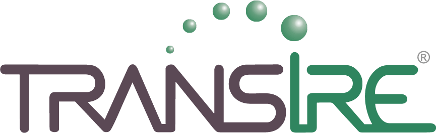
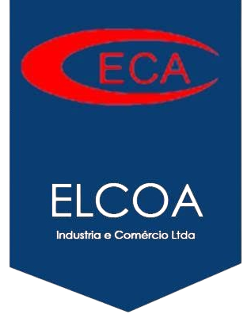

Desperdício de alimentos
Trabalhamos pela redução do desperdício gerado no refeitório, com conscientização inteligente que gera avanços no dia a dia do cliente.
Produzimos e servimos refeições para indústrias do Distrito Industrial e empresas de Manaus-AM, com cardápio planejado por nutricionistas, equipe própria e processos certificados ISO 9001:2015.

Indústrias do Polo Industrial e empresas de Manaus que confiam à MASF a alimentação das suas equipes, todos os dias.


Veja de perto como trabalhamos: do cuidado no preparo ao atendimento, e as pessoas que pensam cada refeição servida às equipes dos nossos clientes.

A MASF Refeições nasceu em Manaus, em 2004, atendendo pequenos eventos. A forma de cuidar de cada cliente, a qualidade dos alimentos e o sabor de comida feita com dedicação abriram espaço para atender grandes empresas do Distrito Industrial.
Hoje unimos estrutura, equipe técnica e processos certificados para servir em grande escala — sem perder o sabor caseiro que é a nossa marca.
Montamos a operação de acordo com o número de colaboradores, os turnos de trabalho e a estrutura disponível na sua empresa.
Operamos a cozinha e o refeitório dentro da sua empresa, com equipe MASF e preparo no dia.
Saiba maisProdução em cozinha própria e entrega no horário de cada turno, com controle de temperatura.
Saiba maisAdministração completa: compras, estoque, equipe, higienização, controles e relatórios.
Saiba maisRefeição diferenciada, com preparações especiais para valorizar o momento da equipe.
Saiba maisDesjejum, lanches e ceia para quem trabalha em turnos, do primeiro ao último horário.
Saiba maisCoffee breaks, confraternizações, SIPAT e treinamentos — onde a MASF começou.
Saiba maisA MASF possui sistema de gestão da qualidade certificado pela norma ISO 9001:2015. Da compra dos insumos até a distribuição no refeitório, cada etapa é controlada e documentada.

Conhecemos a sua empresa, os turnos, o número de refeições e a estrutura disponível.
Apresentamos cardápio, modelo de serviço e investimento adequados à sua realidade.
Equipe, equipamentos e processos prontos, com transição planejada e sem interrupções.
Pesquisas de satisfação, indicadores e melhoria contínua do serviço.

Se a sua dúvida não estiver aqui, fale com a nossa equipe comercial.
Falar com a equipeAtendemos principalmente indústrias do Distrito Industrial de Manaus e empresas de diversos segmentos na cidade, com operações de pequeno a grande porte.
Sim. Oferecemos café da manhã, almoço, jantar e ceia, acompanhando a jornada de trabalho de cada empresa.
Sim. Nesse caso indicamos as refeições transportadas, produzidas em nossa cozinha e entregues no horário de cada turno.
Nossas nutricionistas elaboram cardápios balanceados e variados, de acordo com o perfil dos colaboradores, e o cardápio é alinhado com o cliente.
Sim. Mediante planejamento com a nossa equipe de nutrição, oferecemos opções para restrições alimentares.
Preencha o formulário da página de contato ou fale pelo WhatsApp. Nossa equipe agenda uma visita técnica para entender a sua necessidade.
Agende uma visita técnica sem compromisso com a nossa equipe comercial.